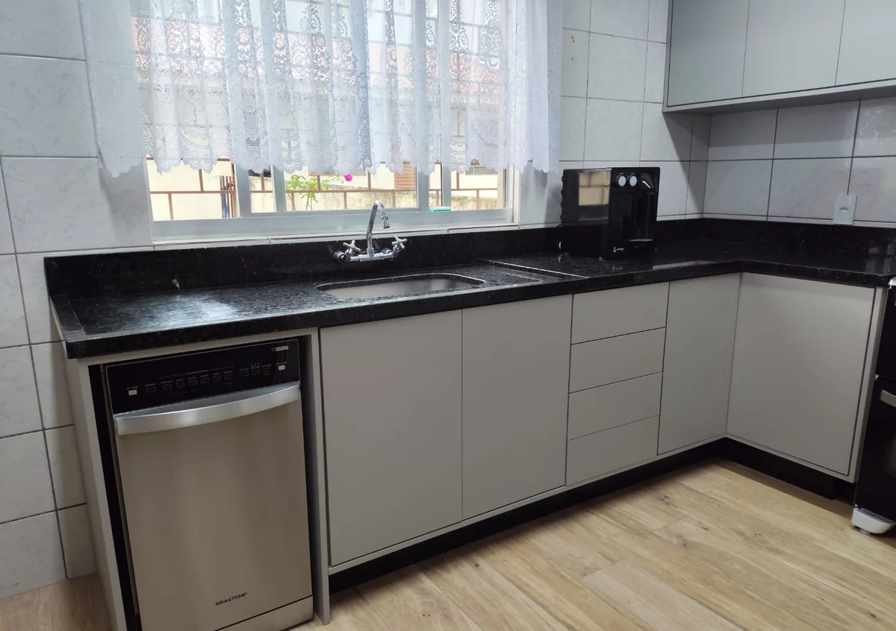
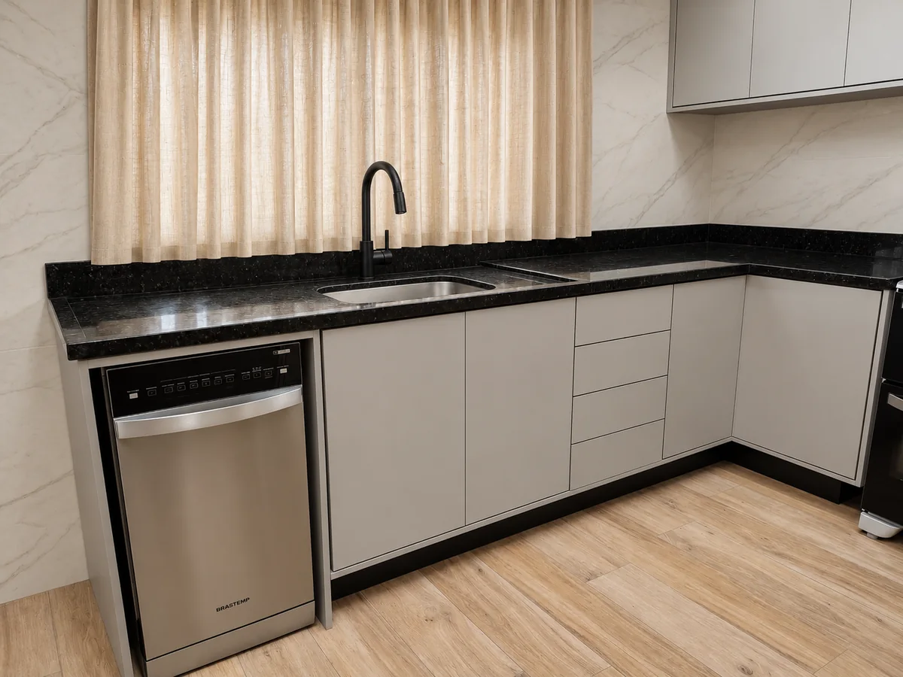
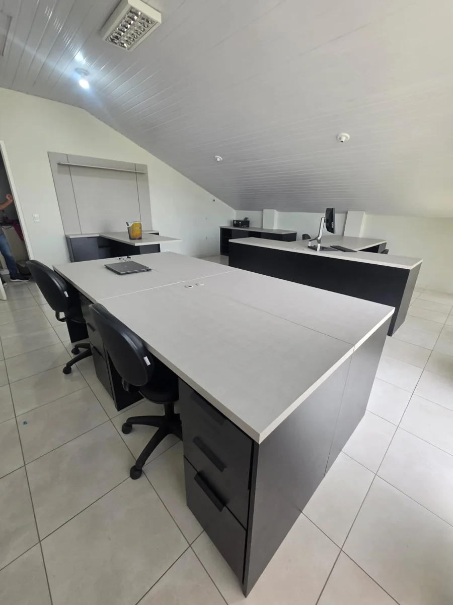
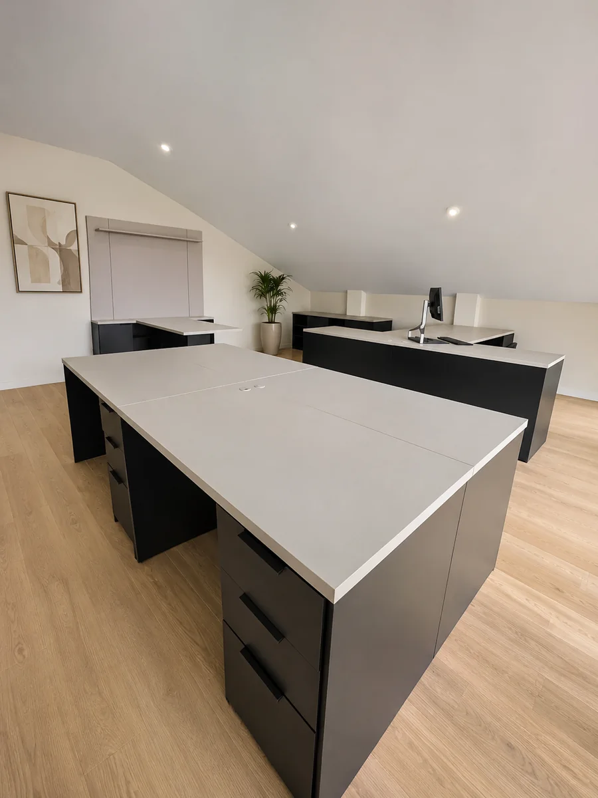

Aprovação das imagens do site
Estas são as fotos reais das obras de vocês, tratadas para o site. Os móveis são exatamente os que vocês entregaram: mesmas portas, gavetas, puxadores, cores e acabamentos. O que mudou foi o ambiente em volta, para a foto ter cara de projeto completo. Arrastem a barra de cada imagem para comparar o antes e o depois.
Imagem 1
Cozinha
- Cortina de linho cobrindo a janela inteira no lugar da cortina de renda
- Parede em porcelanato claro efeito mármore no lugar do azulejo antigo
- Torneira gourmet preta e bancada livre, sem o purificador
- Marca d'água do celular removida


Imagem 2
Escritório com teto inclinado
- Piso de madeira clara no lugar do piso cerâmico
- Teto branco com spots embutidos no lugar da luminária antiga
- Ambiente limpo: sem cadeiras, objetos soltos e porta aberta, com quadro e planta


Para ver as imagens já aplicadas no site, no topo e nos cards de cozinha e de escritório: abrir a versão de teste do site